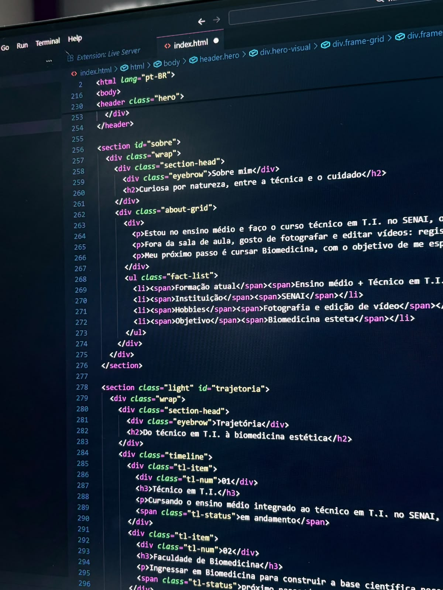
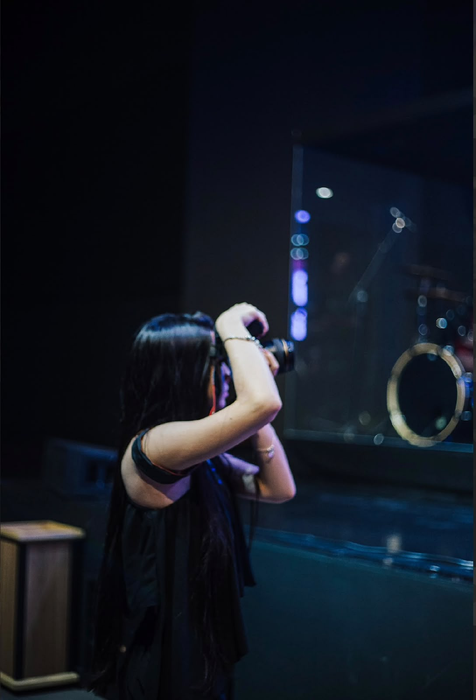
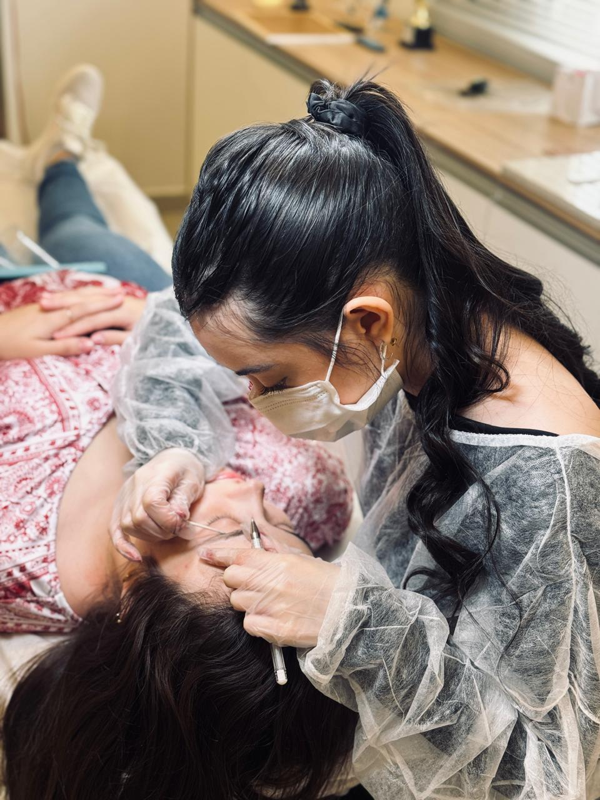
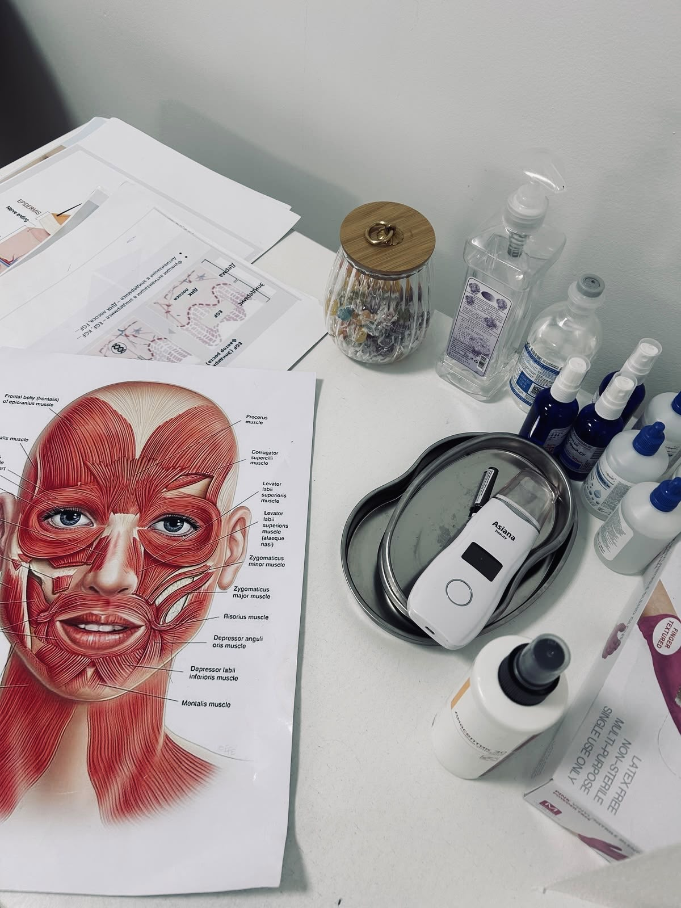

Estudante do ensino médio, cursando o técnico em T.I. no SENAI. Entre linhas de código e cliques de câmera, me preparo para um futuro na biomedicina estética.




Estou no ensino médio e faço o curso técnico em T.I. no SENAI, onde aprendo a pensar de forma lógica e resolver problemas — algo que carrego para tudo que faço, inclusive para fora da tela.
Fora da sala de aula, gosto de fotografar e editar vídeos: registrar momentos e depois dar forma a eles é o tipo de trabalho que mistura técnica e sensibilidade, e é aí que me sinto mais eu mesma.
Também atuo como lash designer e designer de sobrancelhas, trabalhando diretamente com estética e cuidado com as pessoas — uma prática que já antecipa o caminho que quero seguir profissionalmente.
Meu próximo passo é cursar Biomedicina, com o objetivo de me especializar em estética. Quero unir precisão técnica e cuidado com as pessoas em uma carreira só.
Meu próximo passo é cursar Biomedicina, com o objetivo de me especializar em estética. Quero unir precisão técnica e cuidado com as pessoas em uma carreira só.
Atuando como lash designer e designer de sobrancelhas, já na prática do cuidado estético com as pessoas.
em andamentoCursando o ensino médio integrado ao técnico em T.I. no SENAI, desenvolvendo raciocínio lógico e base tecnológica.
em andamentoIngressar em Biomedicina para construir a base científica necessária para atuar na área da saúde.
próximo passoEspecialização em estética, unindo ciência, técnica e cuidado com as pessoas em consultório.
objetivoGosto de observar antes de clicar: luz, ângulo, momento certo. É onde exercito o olhar para os detalhes.
Transformo o que foi capturado em algo com ritmo e intenção — cortes, cor e trilha.
Em construção — em breve com trabalhos autorais aqui.
Base para resolver problemas de forma estruturada.
Fundamentos de como sistemas se conectam.
Diagnóstico e manutenção de equipamentos.
Corte, cor e finalização de conteúdos autorais.
Composição, luz e enquadramento.
Conciliar estudos, técnico e projetos pessoais.